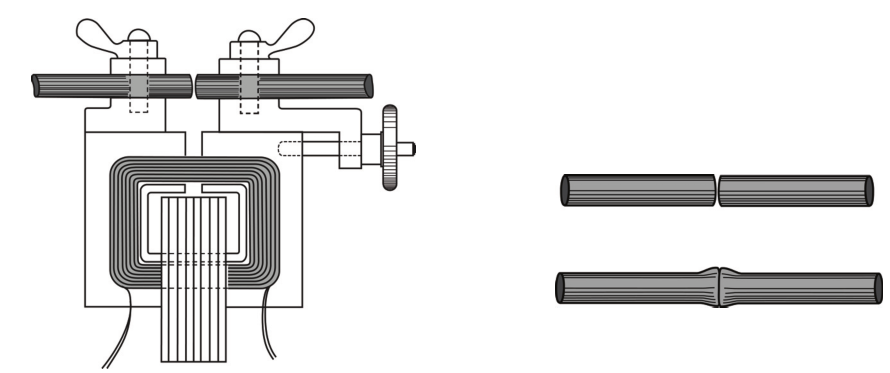
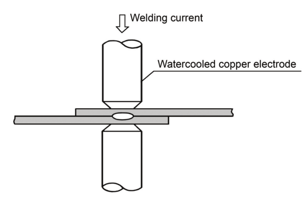
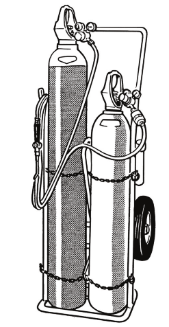
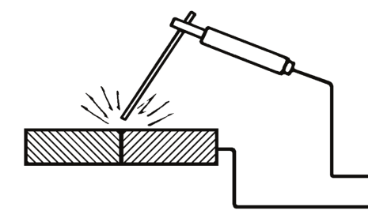

Pengertian Pengelasan
Metode penyambung logam telah ada sejak ribuan tahun lalu, yang banyak dilakukan oleh pandai besi yaitu menggunakan metode tempa. Kemudian pada abad ke 19 mulai dikenal pengelasan menggunakan gas oksigen dan gas acetylene yang menghasilkan nyala api yang panas. Bersamaan dengan itu juga dikenal pengelasan yang bersumber dari energi listrik.
Merujuk American Welding Society (AWS), pengertian pengelasan adalah suatu proses penyambungan dua material / lebih, biasanya berupa logam, dengan menggunakan energi panas sampai material yang akan disambung tersebut meleleh kemudian menyatu / berpadu dengan memberikan tekanan atau tidak, serta dengan memberikan bahan tambahan atau tidak.
Ada 2 kata kunci yang menjadikan suatu proses tersebut disebut pengelasan yaitu:
1.Material yang akan dilas bisa meleleh / mencair
2.Kemudian menyatu / berpadu menjadi solid kembali
Teknik penyambungan logam dengan metode resistance, las gas dan las busur listrik adalah metode yang baik untuk penyambungan logam dan mulai dikembangkan sebelum perang dunia I.
Gambar 1: Thomson resistance welding transformer
Metode Pengelassan:
Resistance Welding
Resistance welding banyak digunakan untuk pengelasan pelat dengan tebal kurang dari 8 mm. Trafo untuk pengelasan resistance dapat menghasilkan 2000A pada 2V open circuit voltage. Pengelasan resistance dikembangkan menjadi beberapa jenis yaitu:
1.Spot welding
2.Seam welding
3.Projection welding
4.Flash butt welding
Pada perkembangan industri, spot welding adalalh jenis pengelasan resistance yang banyak digunakan terutama pada industri otomotif. Prinsip kerja spot welding yaitu ada dua elektroda tembaga yang teraliri arus tinggi memberikan tekanan kepada pelat yang dalam posisi sambungan overlap bersamaan proses tersebut pelat meleleh pada area spot elektroda. Metode spot welding dapat dilihat pada gambar
Gas Welding (Las Gas)
Gas yang sering digunakan untuk pengelasan adalah gas oksigen dan acetylene, pengelasan ini juga disebut oxy acetylene welding. Temperatur yang dihasilkan dari nyala api oxy acetylene welding sekitar 3100°C, dan lebih tinggi dibandingkan jenis gas dari hidrokarbon yang lain
Pada aplikasi di industri, nyala api dari campuran oksigen dan acetylene selain digunakan untuk pengelasan juga banyak digunakan untuk proses pemotongan logam atau sering disebut ocy acetylene cutting. Peralatan untuk gas welding dapat dilihat pada gambar
Arc Welding (Las Busur)
Pada awalnya pengelasan busur menggunakan batang karbon kemudian menggunakan batnag baja tanpa salutan. Pada perkembangannya karena proses pengelasan menggunakan batang baja sulit dilakukan dan banyak terjadi cacat pengelasan, maka dikembangkan elektroda dengan salutan atau yang bisa disebut flux / coating. Prinsip kerja las busur SMAW / MMA Ditunjukan pada gambar
Created by : Aw Fondation